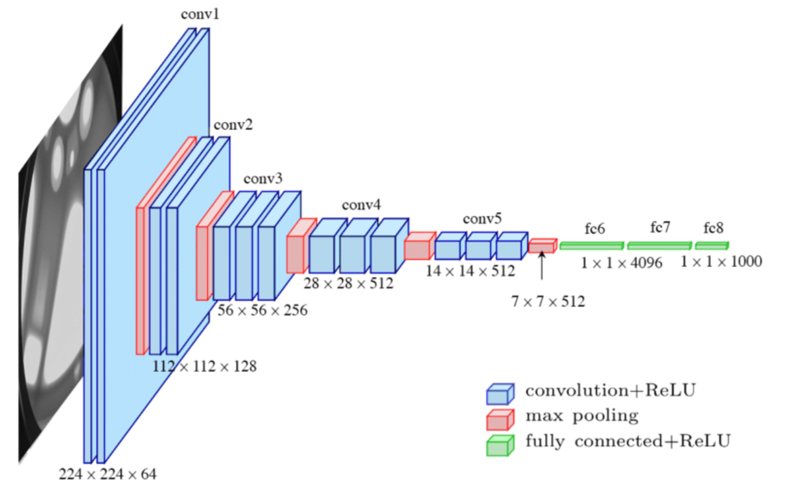

Introduction to MLOps
Andrei Paleyes
Data Science Africa summer school
Kigali, Rwanda
May 2023
Have you ever
trained a ML model?
fixed an issue in a model?
gave the model you worked on to anyone else?
created an app/website/service around a model?
updated an existing model with a new dataset?
Have you ever
trained a ML model?
fixed an issue in a model?
gave the model you worked on to anyone else?
created an app/website/service around a model?
updated an existing model with a new dataset?
If yes to any question except first one - you already did MLOps!
The first question was about just creating an ML model. Every other question was about creating a model that is reliable, accurate, usable, reproducible, etc. That's the "additional" amount of work you need to put into real life, to make important decisions.
What is MLOps?
“MLOps is a collection of processes, practices, technologies and tools to deploy and maintain machine learning models in production reliably and efficiently.”
This may seem like a lot of heavy words that are quite unnecessary. Maybe oblivious academics came up with that to sound smart? Kind of yes, they did! But in this talk I'll try to show why most of that is actually natural, reasonable things to do, and at some point become a necessity.
Cassava Leaf Disease Classification
Let's gradually work our way through MLOps with an example of an app that identifies sick cassava leafs. So let's say we spoke to local farmers and decided to build an app for their phones to determine, with a photo, if a cassave plant is healthy or not.
Train a model

For a start, of course, we would want to build a model, to see if we can do it at all. We find a dataset online, pick some sort of image classification model e.g. a CNN, train and test until we are satisfied. Thanks goodness we only need to be it once. We are done with ML bit, yay! But are we done? Not yet!
Data collection
First thing to realise is that cassava illnesses are numerous. The dataset we've got is a generic one, or worse built in a specific region. We need our own. For that we need to go around and ask people to send us photos of good and bad leaves. That's data collection.
Data enginering
Not a leaf!
Banana is not cassava!
Leaf soup is not leaf!
Next we need to sift through the photos. Some sent us banana leafs, some sent us cassava itself. We need to adjust brightness (different time of day), scale (pictures taken far and close) and so on. And finally we need to annotate the photos to have training and test labels. So we mixed a lot of activities here: labelling, data clearning, feature engineering, etc. We can call of that collectively data engineering.
Train a model (2)
Next we train our model on this new dataset specific to our local region. Perhaps experiment, adjust hyper-parameters like the number of layers. Turns out we weren't done with ML after all! Thanks goodness we only need to be it twice.
Model evaluation and analysis
Now we need to make sure the model works. Run it on unseen data, measure metrics, understand if there are uncovered edge cases. For example does it pick the sickness that only shows on the edge of the leaf (literal edge case). We make a decision about what is an acceptable quality, and acknowledge that the model will never work quite perfectly. This is model evaluation and analysis.
Train a model (3)
It may so happen that our training procedure needs to be adjusted at this point, beause while it worked well overall, there might be cases which we want to resolve better. Thank goodness we only need to do it three times.
Where to run the model
Make a decision where to run the model:
- In a cloud or on a server, behind some sort of interface that you can call. More powerful hardware but requires internet connectivity to use.
- Or on the phone itself. No constant connectivity required, but different phones might run different hardware, so there will be compute andmemory limitations, as well as compatibility questions.
Mobile app
Now we create a mobile app that either wraps around our model or calls our API, and allows a farmer to take a photo and classifies it. Creating mobile apps is kinda out of scope of MLOps, but i do not want to belittle this work, as it's far from easy:
- Create an app - totally separate and non-trivial effort
- Design a UI that would make sense for non-ML and non-tech people, who will be the main users.
Deployment
Previous two steps are actual deployment, or model hosting, or model serving. Regardless of which way we go, server or mobile, there will be data tasks, like:
- Same data preprocessing, lighting, brightness, distance etc.
- Filter out banana leafs, cassava fruit(?), ets.
Remember those? But this time we actually need to write code for all of that, because it has to run independently, right?
And we are done!
Or are we?
At this point we can hand out the app to the farmers and let them use it.
Phew, we are done! We have achieved something known as Level-0 MLOps, meaning we have full deployment, but everything is done manually.
But our job isn't done! Why?
Monitoring
Monitoring! We need to make sure our model works as we thought it would. What can go wrong?
- Different data distribution, e.g. different disease, or different kind of plants
- Actual performance lower than we wanted
- People not understanding/not trusting the output
- Failures: errors, misses
- Latency issues
... list goes on ...
Monitoring
What do you do? You collect metrics, meaning you save some metadata for each prediction we do, and analyse it. Also, if problems are detected, you need to debug them. Meaning you need logging in place. As well as the way to transfer metrics and logs from the app or service to your own machine where you can analyse them.
Train a model (4)
And then you need a way to update your model - maybe retrain with new data, maybe fix a bug in preprocessing, etc. Thank goodness we only need to do it four times!
And we are done!
For real this time
Kind of done, anyway
Tools!
Doing this manually would be a hard task, so we shall employ tools to automate the process where possible. The amount of tools depends on your needs, resources and time. That is, you can just use a few tool a few tools, e.g. one to simplify labelling and one to store metrics. Or you can go all the way to a full CI/CD pipeline, completely hands free, where the your infra will detect a drift in your data by itself, download relevant data, retrain the model, upload it back to the service - all without human intervention. I'd like to believe these pipelines exist, although I never saw one personally.
Tools landscape 2012
There are many different activities we covered: data collection, data clearning, labelling, feature engineering, trainig, validation, monitoring, updating, so on. COnsequently there is quite a number of tools for MLOps. Many people these days busy themselves with building so called "Tools landscapes" - sort of images that include logos of all tools and companies involved in a particular space. For example here is one compiled by Matt Turck, a VC investor from US, and his team. This was the landscape in 2012, first time they compiled such an image.
Tools landscape 2023
And here is the one from 2023, release just a few weeks ago, by the same team. Looks good, right? There are maybe even fewer logos in this one. Except...
MLOps maturity levels
0 - No automation
1 - DevOps but no MLOps
2 - automated training
3 - automated deployment
4 - fully automated MLOps
Depending on how automated your pipeline is, you can pride yourself in achieving certain level of MLOps. Which is very subjective. FOr example here are the levels as they are defined by MS Azure. Different sources may have different gradation.
Advanced topics
Multiple models, model registry
Data and model versioning
Experiment tracking
Live experiments e.g A/B testing
...
Resources
A Gentle Introduction to MLOps ml-ops.org Azure MLOps levels Cassava Leaf Disease Classification The Machine Learning Engineer Newsletter Machine Learning Engineering for Production (MLOps) Specialization MLOps bookshelf MLOps: A Taxonomy and a Methodology , Testi et al., IEEE Access 2022Scaling Big Data Mining Infrastructure — The Twitter Experience , Lin and Ryaboy, ACM SIGKDD Explorations Newsletter 2013Monitoring and explainability of models in production , Klaise et al., ICML DMML workshop 2020Challenges in Deploying Machine Learning: a Survey of Case Studies , Paleyes et al, ACM Computing Surveys 2022